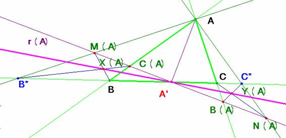

Propuesto por Juan Bosco
Romero Márquez, profesor colaborador de la Universidad de Valladolid
De investigación
Problema
305.- Sea el triángulo ABC y dada la ceviana arbitraria AA' donde A´,
varía sobre el lado BC. Construimos los triángulos rectángulos en el vértice A,
que denotamos por ACB* y ABC* donde B* y C* son los puntos más próximos a B y
C, y situados tal vez en la prolongación del lado BC. Por A' trazamos la
recta perpendicular a AA', y los puntos de corte de ésta, con AC, AC*, AB, AB*
los designamos por B(A), N(A),C(A), M(A),
respectivamente. Y, con ellos, construimos los cuadriláteros P(A) = C(A)BB*M(A) y Q(A)
=CB(A)N(A)C*.
a) Si X(A) e Y(A) son los puntos que se obtienen
como intersección de las diagonales de los cuadriláteros P(A) y Q(A),
respectivamente, entonces X(A), A', Y(A) están alineados.
b) Lugares geométricos descritos por los puntos
X(A), e Y(A), cuando A' varía sobre la recta que contiene al lado BC,
respectivamente.
Romero, J.B.
(2006): Comunicación personal
Solución de Saturnino
Campo Ruiz, profesor del IES Fray Luis
de León, de Salamanca

a) Dado A’, construyo la recta
r(A)
como la perpendicular a AA’ por éste
último. Tomando r=BC defino, con el
punto A como vértice, una proyección
entre estas rectas.
Se
corresponden los puntos (M(A), C(A), A’,
B(A), N(A) )
de r(A) con los puntos de r (B*, B, A’, C, C*).
Una
proyección es una homografía y los puntos X(A), A’
e Y(A) pertenecen al eje proyectivo de la misma: están alineados.
b)
Los puntos B*, C* dependen
exclusivamente del triángulo dado para cualquier ceviana
AA’ que se tome. Como X(A)
se expresa como intersección de dos rectas por B y B* estamos inclinados
a pensar si este punto describirá al variar A’,
una cónica, pero no es así. La imagen de una recta que pase por B corta a la recta AB* en un punto, llamésmolo B”. El punto A’
del que procede se obtendría por intersección de la circunferencia de diámetro B”A con el lado BC. Ya aparece un primer inconveniente:
habría dos puntos de corte y otro más: podría no haber ninguno. Así pues no
siempre se podría determinar una proyectividad entre las rectas de un haz de
vértice B con las de otro haz de
vértice B*. En conclusión, sin saber
cuál es el lugar geométrico descrito por X(A), sí podemos decir que no es una
cónica.
Conclusiones
análogas se establecen para el otro punto Y(A).